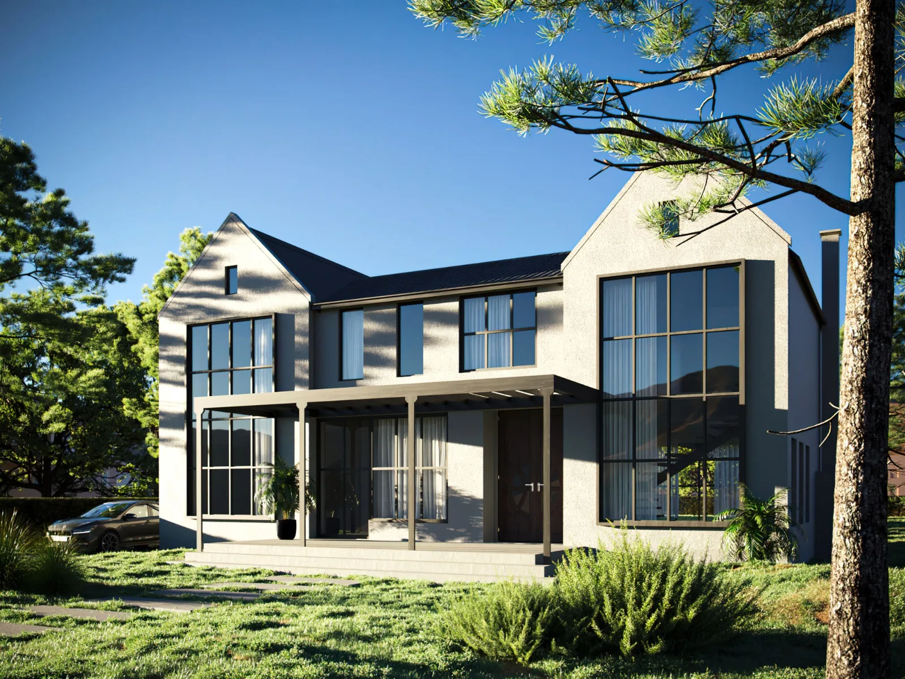

Espacios para
habitar mejor.
Arquitectura que conecta los espacios
con las personas que los habitan.

OCEÁNICA / UNA MIRADA PROPIAIdeas que toman
forma.
Todos los proyectos ↗


El bienestar
también se
diseña.
Nuestros proyectos se fundamentan en la neuroarquitectura.
Los espacios que habitamos influyen en cómo nos sentimos. Mi trabajo conecta la arquitectura con las neurociencias aplicadas para crear entornos pensados en las personas.
Proyecto arquitectónico
Reformas y ampliaciones
Dirección de obras
Equipamiento e interiores
Sofía
Corral.
20+ años de experienciaen arquitectura
Una mirada sensible.
Una trayectoria construida.
Soy arquitecta y mi enfoque actual se centra en la intersección entre la arquitectura y las neurociencias aplicadas. Cada proyecto es una oportunidad para integrar creatividad, conocimiento y bienestar.
Conocé más sobre mí ＋
Arquitecta con una pasión arraigada por la excelencia y la innovación. Con más de 20 años de experiencia dedicadas al campo de la arquitectura, mi trayectoria profesional ha sido moldeada por un compromiso inquebrantable con la calidad y la integración de los avances en mi disciplina.
Mi enfoque actual, se centra en la intersección entre la arquitectura y las neurociencias aplicadas. A lo largo de los años, he explorado profundamente cómo el diseño de espacios puede influir en el bienestar físico y mental de quienes los habitan. Esta especialización en neurociencias aplicadas a la arquitectura me ha permitido crear estructuras estéticamente impactantes, y espacios que promueven el bienestar y la felicidad de sus usuarios.
Creo firmemente en la importancia de comprender las complejas interacciones entre el entorno construido y la experiencia humana. Cada proyecto que abordo es una oportunidad para fusionar la creatividad arquitectónica con el conocimiento científico más reciente, creando así soluciones que trascienden lo estético para abordar las necesidades fundamentales de las personas.
A través de mi dedicación a la investigación, la colaboración con expertos en diversas disciplinas y mi enfoque centrado en el cliente, he establecido una reputación de confiabilidad y excelencia en el campo de la arquitectura. Siempre estoy comprometida a superar las expectativas y a ofrecer resultados que generen satisfacción, y además inspiren y transformen.
Espero tener la oportunidad de colaborar contigo en la creación de espacios que no solo sean visualmente impactantes, sino que también mejoren tu calidad de vida de manera significativa.
El recorrido
detrás de cada obra.
Explorá los trabajos y la formación que acompañan mi práctica profesional.
2019Casa Las Grutas. Mil Constructora＋
Ejecución de planos de anteproyecto, planos de obra y detalles. Manejo se personal a cargo durante las tareas de reforma y ampliación de vivienda.
2019Edificio Angelina. Parada 22 Brava＋
Equipamiento integral de 5 apartamentos. Terminaciones, colocación de artefactos de iluminación, cortinas, electrodomésticos y decoración. Aptos. 306, 303, 301, 104, 102.
2018Villa 35 Las Piedras. Fasano＋
Dirección de obras, cómputo presupuesto. Encargada de la empresa constructora que realizaba los trabajos de ampliación de garaje, oficina, sala de cine, espejo de agua, rampas de acceso vehicular, escalera de acceso peatonal y Fogón.
2018Apto 205. Palcos de Mar. Montoya＋
Ejecución de equipamiento Integral, tareas de pintura, revestimientos exteriores, colocación de artefactos de iluminación y decoración.
2018Colegio St. Clare`s Punta del Este＋
Ejecución de planos, cómputos y presupuestos. Dirección de obras y manejo de personal para realización de cancha de football sintético.
2018Apto 305. Edificio Uoro Preto. Parada 9 de la Mansa＋
Proyecto y Dirección de Obras, cómputos y presupuestos, Encargada de Obras de refacción de baño de servicio, Cocina, comedor de diario, lavadero, baño principal. Manejo de personal de obra, compra de materiales y ejecución de planos.
2018Mas Infinito Casa Deco＋
Encargada Local de Manantiales. Cumpliendo tareas de organización, logística, venta, imagen del local, Pagos a proveedores y cuentas locales, depósitos bancarios.
2017China LAC. Centro de Convenciones. Punta del Este＋
Ejecución de tareas de armado de Stands, manejo de personal en armado de los mismos, instalaciones eléctricas y recepción de materiales de decoración. Armado y desarme, de acuerdo a planos y tiempos planteados.
2017Casa Las Flores. Colonia del Sacramento＋
Ejecución de Proyecto, Dirección de Obras. Reforma y ampliación de vivienda, cumpliendo tareas de jefe de obra, cómputos presupuestos, presentación de documentación en IMC.
2017Alejandro Balut Estudio＋
Desempeño de tareas de anteproyecto, Proyectos, Dirección de Obras Cómputos y Presupuestos. Obras: Edificio La Pionera Punta Ballena. Reforma y Refacción Parador Bagatelle Punta del Este Resort. Apto Piso 23 Edificio Roosevelt Center. Para mencionar algunos.
2017Casa Galindez. La Juanita, José Ignacio＋
Dirección de Obras, cómputos presupuestos. Proyecto realizado por estudio Arlic-Galindez. Ejecución de obra en estudio propio.
2016 a Abril de 2017Compac Ltda. NZ - Zona Franca Colonia＋
Asesoramiento para nuevo sistema constructivo seco en base a poliurea y placa de roca de yeso. Proyecto Piloto con casa de 80 m2. Dirección de obra. Proyecto para oficinas de Pepsico Colonia en Zona Franca. Mi trabajo consistía en controlar los procesos de obra, optimizar los tiempos de ejecución, mejorar la calidad de producción, controlar los insumos, pagos y costos del sistema.
2011 a Octubre de 2016Atijas Casal Arquitectos＋
Administración SH Edificio Altos del Virrey. Real Colonia Hotel. Colonia del Sacramento. El trabajo consistía en Gerencia de Administración Hotelera de 42 apartamentos, manejo de recursos, liquidación de ganancias, pagos a los propietarios, relaciones públicas entre los propietarios y el Hotel, También chequeo y entrega de unidades terminadas a los propietarios, chequeo y revisión de inventario de mobiliario de aptos.
Junio 2002 al 2005Corral – Adler – Robles Arquitectos Asociados Profesional Independiente＋
Proyecto, Dirección Técnica y Ejecución de Obras nuevas y Remodelaciones. Solicitar información si se requiere. Algunos de los trabajos realizados son: Diseño de Viviendas unifamiliares, remodelación de viviendas de una y dos plantas. Arquitectura Comercial. Oficinas. Presentación de carpetas de proyectos de Inversión para Barrios Privados. Tucumán Argentina.
Febrero 2000 a Junio 2003REDES SRL – Construcciones Electromecánicas y Civiles Proyecto y Dirección de Obras＋
Esta compañía ofrecía servicios a grandes empresas estatales y privadas, como Telecom Argentina y Gasnor (Empresa de Gas del Noroeste), para la ejecución de obras electromecánicas y civiles. El trabajo consistía en el armado de la carpeta completa desde la etapa de anteproyecto hasta el final de la obra: La carpeta incluía anteproyecto, proyecto con ejecución de todos los planos necesarios para enviar a las empresas constructoras para la ejecución de presupuestos, selección y revisión de cómputos y presupuestos, dirección y supervisión de las Obras asignadas.
Septiembre 1998 a Enero 1999Arquitecta Estela Capdevilla Proyectista＋
Proyecto y dibujo de planos de casas unifamiliares de una y dos plantas. La Rioja Argentina.
Agosto 1998 a Diciembre 1998Agropecuaria Paluqui, Banco Velox Jefa de Obra＋
Proyecto y dirección técnica de ampliaciones que incluían, galería, quincho, pileta, asador, baño y lavadero. Ampliación de casa existente, Oficina de Gerenciamiento. La Rioja, Argentina.
Marzo 1997 a Julio 1998SCALA Construcciones Proyectista＋
Dibujo de planos y proyecto de casas unifamiliares y dúplex. Tucumán, Argentina.
Noviembre 1994 a Febrero 1995Arq. Alejandro Moiraghi Proyectista＋
El Trabajo consistía en pasar planos de arquitectura, e ideas de proyecto de viviendas privadas, bares, edificios comerciales. Tucumán, Argentina.
ArquitectaUniversidad Nacional de Tucumán＋
Solicitar títulos y certificados
Institución FAUCurso Uso de la Madera en la Construcción＋
Cátedra de Construcciones I – Arq. Meyase Edificios Inteligentes FAU (Facultad de Arquitectura y Urbanismo) y Fundación Banco Empresario
Tucumán, ArgentinaCementos y Hormigón para Pavimentos＋
Empresa Minetti y Cemento Hércules Autocad R14 al 2010 Colegio de Arquitectos.
(Argentina y E.E.U.U.)Charla sobre su Obra por Arq. Cesar Pelli＋
CEFAU (Centro de estudios Facultad de Arq. Y Urbanismo) - Tucumán
(Italia y resto de Europa)Charla sobre su Obra por Arq. Mario Botta＋
CEFAU - Charla sobre su Obra por Arq. T. Díaz (Pcia. de Córdoba, Argentina) CEFAU – Tucumán.
(Pcia. Córdoba y Bs.As.)Charla sobre su Obra por Arq. Miguel A. Roca＋
Charla sobre su Obra por Arq. Mario Solsona (Pcia. De Bs.As.) CEFAU – Tucumán.
UNTCurso inglés e Inglés Técnico＋
Curso inglés e Inglés Técnico para Abogados Institución Prof. Felicitas Paz Zavalia – UNT
Lic. Susan HoldenEnglish Fundation English Language Teaching AR DI TT Course＋
Cátedra de Comunicaciones – Sept. 1998La importancia de la forma FAU | UNT＋
Tasación y Negociación Inmobiliaria CEITJº Inmobiliarias Nacionales＋
Cámara de empresas inmobiliarias de Tucumán.
Univ. ValenciaSeminario Internacional de Arquitectura＋
2007-08 Centro Politécnico del Cono Sur.